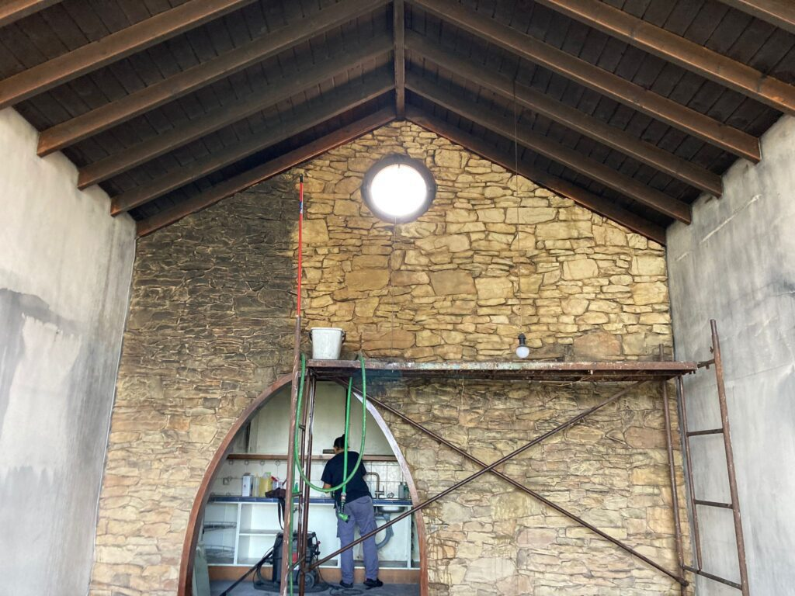

Esta guía te llevará a través de los pasos para mejorar el daño por humo en paredes, techos y muebles. Cubrirá:
- ¿Qué causa el daño por humo?
- Cómo detectar el daño por humo en paredes y techos
- Cómo limpiar el daño por humo
- ¿Se puede pintar sobre paredes dañadas por humo?
- La mejor pintura para cubrir el daño por humo
- Cómo pintar paredes dañadas por humo
- Consejos para prevenir el daño por humo en paredes
¿Qué causa el daño por humo?
El daño por humo tiene varias causas, incluyendo la quema de velas y fumar cigarrillos en la casa. Los químicos en los cigarrillos, como la nicotina, pueden manchar cualquier superficie en el hogar que esté expuesta al humo, incluyendo paredes, techos y suelos. Debido al daño que causa, fumar en interiores durante mucho tiempo puede reducir el valor de una propiedad. Las velas emiten hollín cuando se queman, que se acumula en muebles, paredes y accesorios eléctricos. Con el tiempo, esto puede provocar decoloración y daños en el interior de tu hogar.¿Se puede pintar sobre paredes dañadas por humo?
Es posible pintar sobre paredes dañadas por humo. Sin embargo, no debes aplicar pintura directamente sobre las manchas de humo, ya que esto no las cubrirá. Comienza eliminando las manchas con una esponja de limpieza en seco, seguido de un método de limpieza húmedo. Luego, aplica una imprimación duradera en las paredes para evitar que las manchas se noten. ¡Después de eso, estarás listo para pintar!Consejos para prevenir el daño por humo en paredes
Si no quieres lidiar con el daño por humo en las paredes, puedes tomar varias medidas preventivas.- Solo fuma al aire libre para evitar que tus paredes acumulen manchas de nicotina. Guarda cualquier ropa que huela a humo en una cesta de ropa cubierta también.
- Ventila la casa para evitar que el humo quede atrapado en el interior. Mantén las ventanas y puertas abiertas para que circule el aire fresco libremente.
- Utiliza velas de alta calidad si quieres quemar velas en casa. Evita comprar velas de mala calidad que puedan causar daños por humo. Las velas de mala calidad tienden a quemarse menos eficientemente, lo que resulta en la producción de más hollín. Este hollín luego se deposita en paredes, techos y muebles en el hogar.